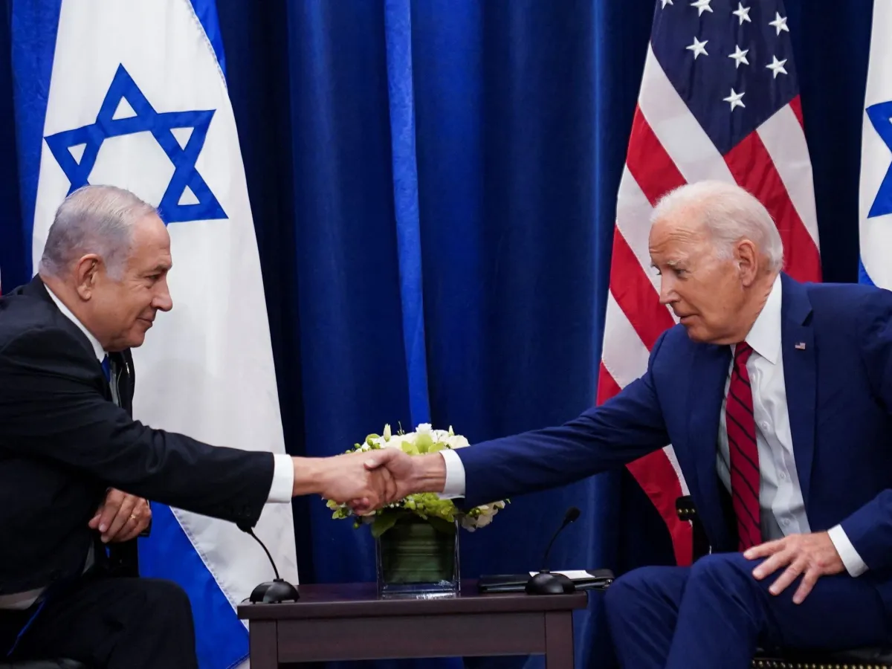

EUA e Israel estão em alerta para possíveis ataques do Líbano ou do Irã, diz professor à CNN.
Postado em 26 de agosto de 2024 às 23:51 
Israel e Estados Unidos em tensão com Líbano, rumores de possível nova guerra assombram a população local e preocupam líderes.
A tensão no Oriente Médio atingiu novos patamares neste domingo, quando Israel realizou um ataque preventivo contra forças do Hezbollah no Líbano.
O incidente marca a pior escalada militar entre as partes desde 2006, levantando preocupações sobre uma possível expansão do conflito para além da fronteira sul de Israel.
Segundo Vitelio Brustolin, professor de Relações Internacionais da Universidade Federal Fluminense (UFF), tanto Israel quanto os Estados Unidos estão em estado de alerta máximo, preparados para responder a uma possível ofensiva libanesa ou iraniana.
Mais de 70 mil russos já morreram na guerra da Ucrânia — a maioria voluntários.
Postado em 20 de setembro de 2024
Mais de 70 mil pessoas que lutavam nas forças militares russas já morreram na Ucrânia, de acordo com dados analisados pela BBC.
E, pela primeira vez, os voluntários — civis que se juntaram às Forças Armadas após o início da guerra — agora representam o maior número de pessoas mortas no campo de batalha desde que a invasão em grande escala da Rússia na Ucrânia começou em 2022.
Todos os dias, os nomes dos mortos na Ucrânia, seus obituários e fotografias de seus funerais são publicados em toda a Rússia por meio da imprensa e das redes.
A BBC News Russia, o serviço de notícias em russo da BBC, e o site independente Mediazona compilaram estes nomes, assim como nomes obtidos a partir de outras fontes abertas, incluindo relatórios oficiais.
X prepara pedido ao STF para voltar a operar no Brasil.
Postado em 23 de setembro de 2024
Israel e Estados Unidos em tensão com Líbano, rumores de possível nova guerra assombram a população local e preocupam líderes.
A tensão no Oriente Médio atingiu novos patamares neste domingo, quando Israel realizou um ataque preventivo contra forças do Hezbollah no Líbano.
O incidente marca a pior escalada militar entre as partes desde 2006, levantando preocupações sobre uma possível expansão do conflito para além da fronteira sul de Israel.
Segundo Vitelio Brustolin, professor de Relações Internacionais da Universidade Federal Fluminense (UFF), tanto Israel quanto os Estados Unidos estão em estado de alerta máximo, preparados para responder a uma possível ofensiva libanesa ou iraniana.